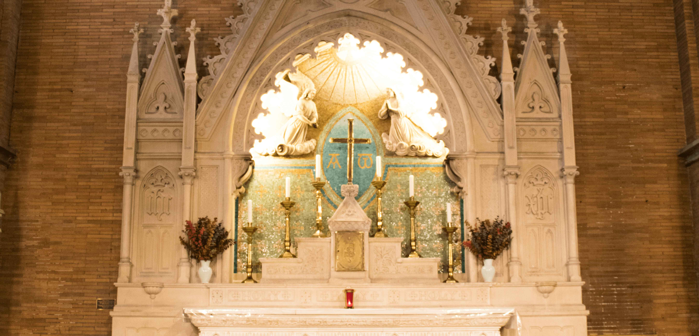
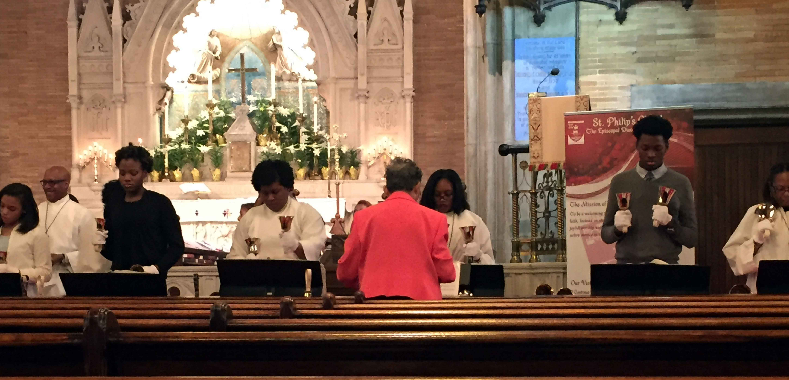
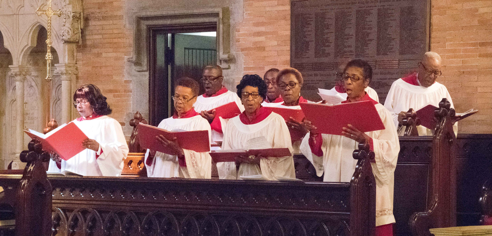
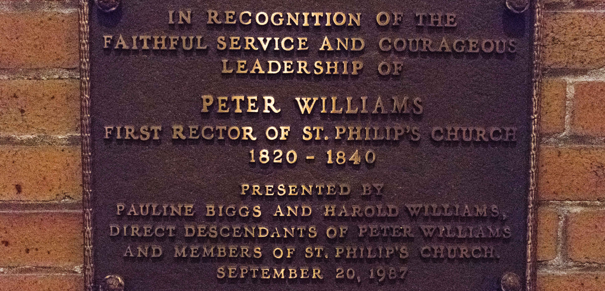
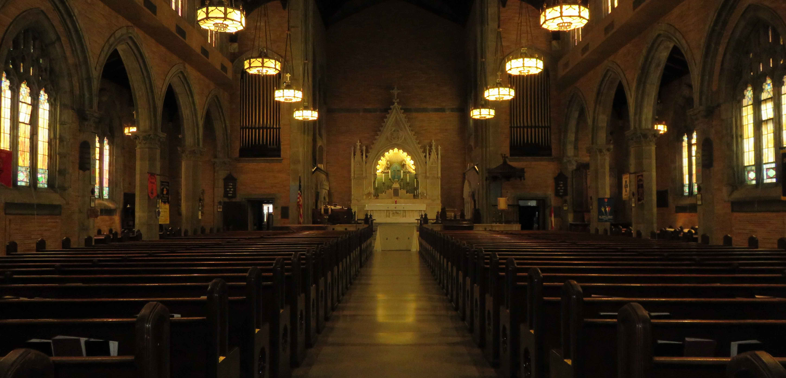
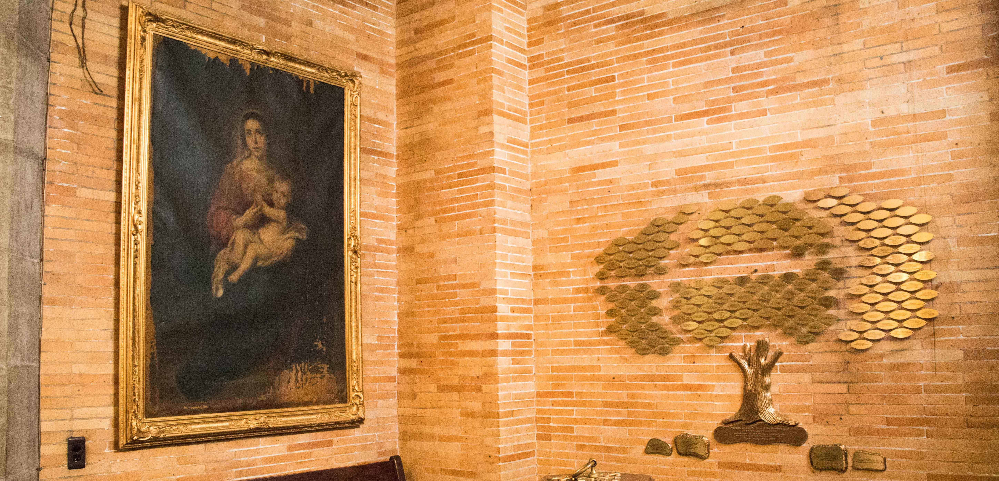

To be a welcoming and vibrant intergenerational community of faith, focused on sharing the Gospel of Jesus Christ through joyful worship and love, commitment to spiritual growth, and active service in the community.
Continue to grow and be an inclusive congregation, meeting the spiritual needs of its members and the wider community. Be a church that both celebrates our history and faithfully lives into the future. Be a community partner with our local business and leaders.